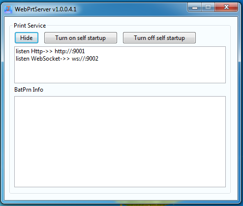
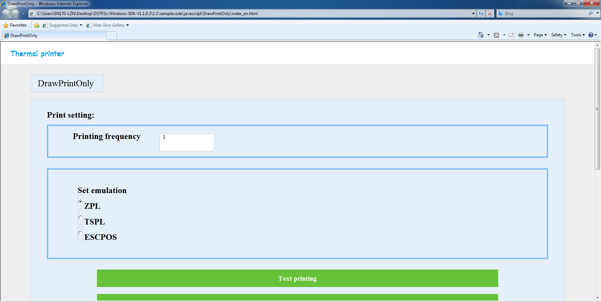
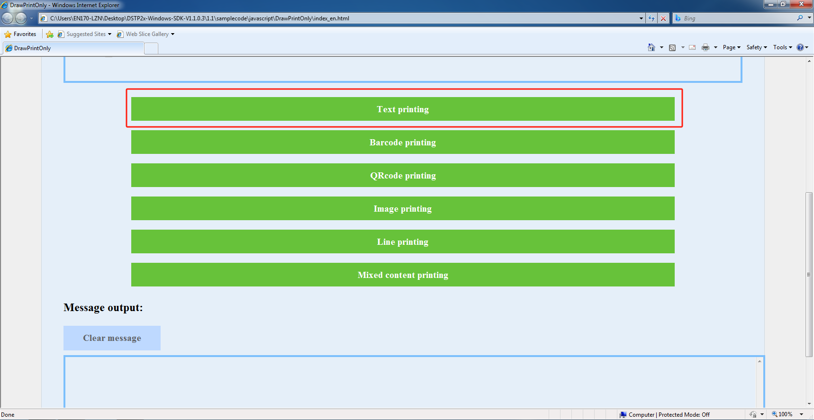

Chapter 6, DSTP2xWebPrtServer User Instructions
1、Software system environment
- DSTP2xWebPrtServer is a service that enables communication between the printer and the web page. Users need to run the DSTP2xWebPrtServer of the corresponding architecture version on a Windows or Linux computer.
- Other devices within the same local area network can communicate with the printer through the IP address of this computer. Devices not within the same local area network can achieve communication with the printer by means of IP mapping through the router.
- Supported systems: Windows XP, Windows 7, Windows 10, Windows 11, CentOS, KylinOS, etc.
- Supported browsers: mainstream browsers such as Google Chrome, Internet Explorer (IE), Firefox, Safari, Qi'anxin Trusted Browser, etc.
2、Instructions for Operation
Windows：
- Unzip the compressed package (the version will be continuously upgraded, and the specific name shall be subject to the actual situation).
- After unzipping, Select and enter the folder of the corresponding architecture system development kit.
- After unzipping, enter the folder of web_server\Win32 or web_server\x64.
- Finally, double-click to run DSTP2xWebPrtServer.exe, as shown in Figure 2.1 below.
- Enter the path of /samplecode/javascript/, open one of the html web pages, and then the demonstration can be carried out.

Linux：
- Unzip the compressed package (the version will be continuously upgraded, and the specific name shall be subject to the actual situation).
- After unzipping, Select and enter the folder of the corresponding architecture system development kit.
- After unzipping, enter the folder of web_server.
- Right-click with the mouse and select "Open Terminal".
- Enter the command: sudo su, then enter the password to switch to the root user. If there is insufficient permission, enter chmod -R 777 * and then execute.
- Run the command: ./map.ds, which is used to grant permissions to run the program based on the SDK to control the printer connected via USB.
- Run the command: ./DSTP2xWebPrtServer.out. After running, it is shown as in Figure 2.2 below. If there is no interface in the system, run "DSTP2xWebPrtServer_Console.out".
- Enter the path of /samplecode/javascript/, open one of the html web pages, and then the demonstration can be carried out.

3、Usage process of the JavaScript sample program
3.1、Open the Sample
In the samplecode\javascript directory corresponding to the architecture, select the JavaScript sample and open the index.html file with a browser. (The following picture shows the interface of the related DrawPrintOnly sample.)

3.2、Execute printing
After connecting the printer, click on the printer. Information about whether the call is successful or failed will be output below. (The following demonstration shows the text printing output.)
